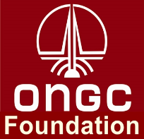
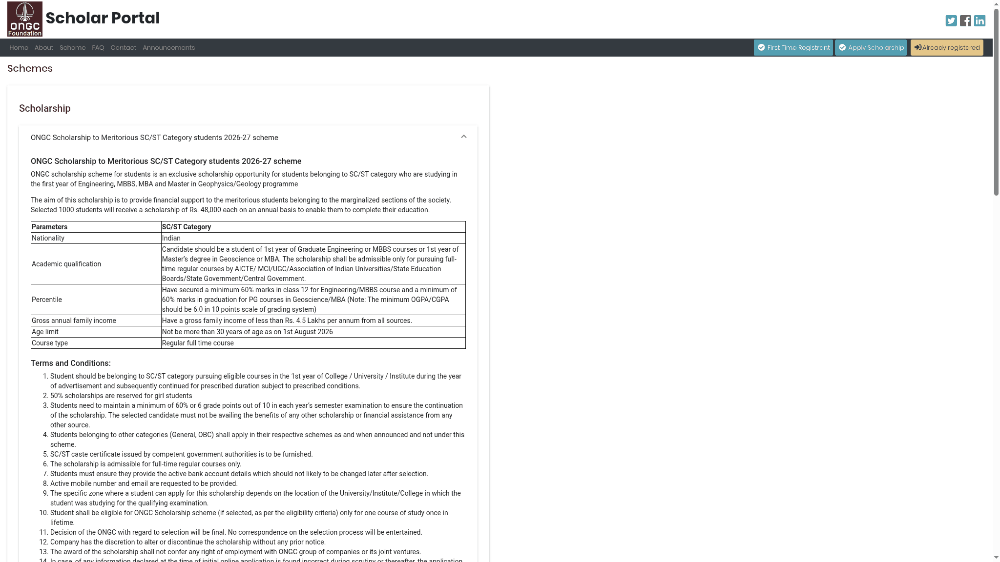

ONGC SC/ST scholarship: ₹48,000 a year, apply by 30 November
ONGC Foundation's 2026-27 SC/ST scheme offers 1,000 scholarships of ₹48,000 per year for eligible first-year students in Engineering, MBBS, MBA and Master's in Geology/Geophysics. The portal's launch notice gives 30 November 2026 as the closing date. This guide covers the SC/ST scheme only, not the separate OBC or General-EWS schemes.
Who can apply
- Indian citizens belonging to SC/ST communities, studying an eligible full-time regular course in India.
- First year of Engineering or MBBS, or first year of MBA or a Master's in Geology/Geophysics. The scheme table also uses the term Geoscience; check your exact course against the portal before applying.
- At least 60% in Class 12 for Engineering/MBBS, or 60% in graduation for the postgraduate courses. The minimum CGPA/OGPA is 6.0 on a 10-point scale.
- Gross annual family income from all sources must be strictly below ₹4.5 lakh.
- Age must not exceed 30 years on 1 August 2026.
- The selected student must not receive another scholarship or financial assistance from another source.
Half of the scholarships are reserved for girls. Kerala students can apply if they meet the scheme rules. The zone is based on the location of the institution where you took the qualifying exam, not simply your home address.
Amount, selection and renewal
The SC/ST allocation is 500 Engineering, 90 MBBS, 140 MBA and 270 Geology/Geophysics scholarships. The stated benefit is ₹48,000 per year. Although the portal describes a ₹4,000 monthly equivalent, payment is annual, after completion of the academic year, through ECS to the student's bank account.
Selection is based on qualifying-exam marks. Lower family income breaks ties, and BPL families receive preference. Renewal is not automatic: students must be promoted, maintain at least 60% or 6/10 in the relevant examinations and submit the online renewal application. If a student later chooses a different scholarship, the terms require repayment of the entire ONGC scholarship received.
Apply in two parts: online and hard copy
- First obtain the mandatory One-Time Registration (OTR) number through the National Scholarship Portal.
- Open the ONGC scholar portal. New applicants choose First Time Registrant, enter details matching their NSP profile and register for a passkey. Existing applicants use their registered mobile number and passkey.
- After login, choose Apply Scholarship, use the SC/ST scheme, enter the OTR number and complete the required personal and academic details.
- Upload the supporting documents. Certificates must be certified and attested by the Head, Principal or Dean of the institution.
- Follow the generated application format for sending the completed form and attested hard copies to the designated ONGC office.
Do not treat this as an online-only application. The public scheme explicitly requires hard copies to reach the designated office. We could not verify the exact postal destination or a separate receipt deadline because those instructions are in the application format behind login. Check that format before posting anything; do not substitute the general contact address in the website footer. The launch notice gives no closing time, so we do not assume 11:59 PM.
Documents to prepare
- SC/ST caste certificate and annual family-income certificate, preferably in Hindi or English as the scheme requests.
- Birth certificate or Class 10 marksheet for age proof.
- Class 12 marksheet for Engineering/MBBS, or consolidated graduation marksheet for postgraduate applicants.
- Bank-attested ECS form and active bank-account details.
- PAN card copy, or the expected submission date if the PAN is not yet available.
- College/institution ID, admission receipt and the required undertaking.
Use an active mobile number and email. Read the declaration and final document checklist on your application before submission. A scholarship award does not give a right to employment with ONGC.

Video guide
We could not verify a reliable English or Malayalam video walkthrough specifically for the 2026-27 application. Use the current scheme panel and the written steps above. Videos for earlier years may omit the mandatory NSP OTR or hard-copy requirement.
What we checked and what remains unclear
We checked the current SC/ST scheme panel and the portal's 2026-27 launch artwork. The launch notice covers 2,000 awards across all categories; only 1,000 belong to this SC/ST scheme. The separate General-category panel still shows an older age-reference year, so its rules have not been merged into this guide. No account was created, applicant details entered or application submitted.
The Foundation's current website confirms its scholarship programme. A University of Delhi-hosted ONGC Foundation letter from 2024 explicitly directs applicants to ongcscholar.org; it is used only to corroborate the portal address, not to establish this year's rules.
Sources: 2026-27 scheme panel; 2026-27 launch notice; ONGC Foundation scholarship page; University of Delhi-hosted portal reference (2024). Checked 12 November 2026. Explainer by AiCoN, not a government publication. Recheck the portal before applying.